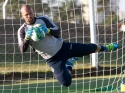

Pesquisar...
ok
Ouça a 730
Início
Esporte
Back
Atlético Goianiense
Goiás
Vila Nova
Futebol Goiano
Na área
Seleção Brasileira
Brasileirão Série A
Brasileirão Série B
Mais esportes
Notícias
Back
Comportamento
Educação e Tecnologia
Economia
Entretenimento
Mundo
Política e Cidades
Saúde e Ciências
Segurança e Justiça
Variedades
Blogs
Back
Mirelle Irene
Monara Marques
Murilo Nascente
Nivaldo Carvalho
Pedro Henrique Geninho
Pedro Marinho
Rubens Salomão
Vinícius Tondolo
André Rodrigues
Charlie Pereira
Gerliézer Paulo
Futebol de Goyaz
Evandro Gomes
Vitor Monteiro
Arthur Magalhães
Copa 730 Society
Luciana Maciel
Toque Gourmet
Cecília Barcelos
Gestão e Carreira em Foco
Fernando Italiani
Café com Tecnologia
Luciana Silva
A 730
Back
Fale Conosco
Ouça a 730
Aplicativo
Back
Iphone, Ipad, Ipod
Android
Institucional
Programação
Vídeos
Eleições 2016
Últimas Notícias
Podcasts
Acompanhe as Paralimpíadas Rio-2016 em TEMPO REAL!
Divulgada pesquisa 730/Grupom com intenções de voto para prefeito em Aparecida de Goiânia
1
2
3
4
5
Prev
Next
Chapa de Pedro Canedo é considerada inapta a disputar eleição em Anápolis
UEG abre inscrições para vestibular e SAS
Cantor goiano Pádua mostra seu talento no Estúdio 730 deste domingo
Paralimpíadas: Brasileiros conquistaram duas pratas na natação nesta sexta
Agenda: Confira os compromissos dos prefeitáveis em Goiânia neste sábado (10)
esporte
EXPECTATIVA
Nas estreias de Gilson Kleina e Márcio, Goiás recebe o Ceará pela fuga do rebaixamento
Novo treinador deve promover três alterações na equipe titular, entre elas, Márcio no gol e Marcão no ataque.

NOVO ARQUEIRO
Ansioso pela estreia, Márcio elogia trio de ataque: “jogadores de grande capacidade”
AO ATAQUE
Animado com trio de ataque, Rossi elogia semana de trabalho e quer Goiás com “pegada mais forte”
VAI E VEM
Goiás negocia Richard com grupo de empresários e renova contrato de Thalles
TÊNIS
Brasil na final do US Open! Bruno Soares/Jamie Murray garantem vaga na decisão do Grand Slam
DESAFIO COMPLICADO
Duelo alvirrubro em Maceió: Vila Nova encara o CRB, que tenta seguir no G-4
ALTERNATIVA
Com dificuldades em contratar um meia, Guilherme Alves explica opção por Fabinho
ESTÁ FORA
Com virose, Vinícius Simon é cortado e não embarca para Maceió
IMPROVISADO
Com Fabinho no meio, Vila Nova terá duas alterações para enfrentar CRB
PÉS NO CHÃO
Michel classifica como real a chance do título e prega “humildade” na sequência do campeonato
VELOCIDADE DOURADA
Daniel Martins quebra recorde mundial e leva ouro nos 400m T20
PRATA
Judoca Lúcia Araújo conquista sexta medalha do Brasil nas Paralimpíadas
FOCO NO DRAGÃO
Romário revela que não vai “secar” os adversários pela liderança e destaca: “fizemos a nossa parte”
notícias
ELEIÇÕES 2016
Aparecida de Goiânia: Candidatos comentam desempenho em pesquisa 730/Grupom
É FOGO
Corpo de Bombeiros mantêm trabalho de combate a incêndio no Morro da Frota, em Pirenópolis
RENAPSI
Fórum promove discussão sobre empreendedorismo e liderança administrativa a jovens
CULTURA
“Sobre isto, meu corpo não cansa” é sequência de espetáculo de dança no Teatro Goiânia
DE ALMA LEVE
Obra do poeta e jornalista Tião Pinheiro é destaque no Noite Ilustrada deste domingo
ORIENTAÇÃO
Eleições 2016: Cileide Alves destaca o Boletim Eleitoral Gratuito desta semana
CAMPANHA
Prefeitura de Goiânia realiza passeio ciclístico em comemoração ao Dia do Cerrado
IRRESPONSABILIDADE
Polícia evita “racha” de carros e motos na GO-020
CALDEIRÃO
Polícia Federal combate tráfico de drogas em Goiás e em mais dois estados
ANÁLISE
Pesquisa 730/Grupom aponta Saúde como principal problema em Aparecida de Goiânia
EDUCAÇÃO
Rede goiana de ensino continua entre os primeiros lugares, aponta ranking
AINDA DÁ TEMPO
Termina neste sábado prazo para inscrições no Programa Bolsa Universitária da OVG
ECONOMIA
Inflação oficial acumula taxa de 8,97% em 12 meses
Tv 730
Candidatos a prefeito de Trindade expõem propostas no Debate 730
Confira o que foi destaque no Boletim Eleitoral Gratuito desta semana, com Cileide Alves
Divulgada pesquisa 730/Grupom com intenções de voto para prefeito em Aparecida de Goiânia
TV730: Com facilidade, Atlético vence Luverdense e assume a liderança da Série B
TV730: Vila Nova domina as ações, cria boas chances, mas não sai de empate contra Atlético
Ouça a 730
Ouça a 730
Flash plugin failed to load
00:00
00:00
(62) 98400-1757
x
Ouça a 730
Main Menu
Plataforma Steam
ForoGuate
ForoCarros